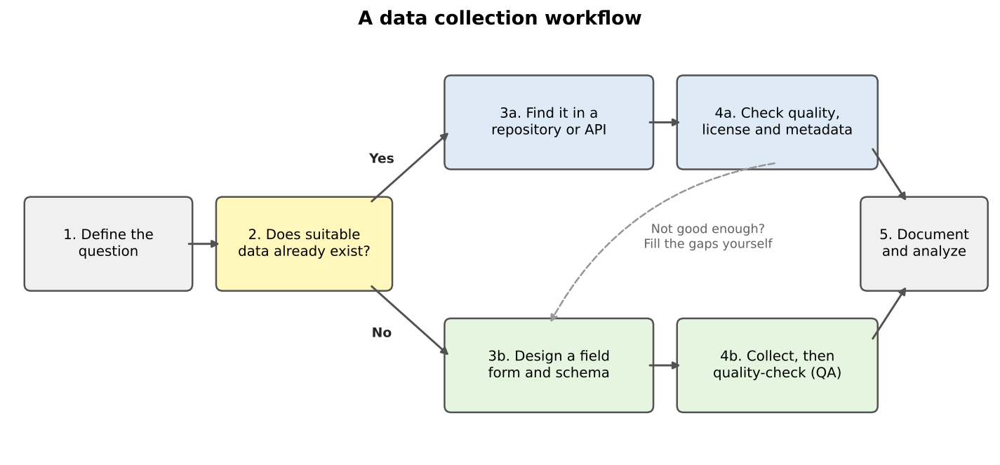
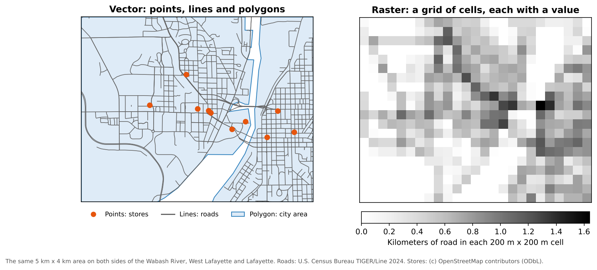

All in One View
Content from Introduction to Data Collection
Last updated on 2026-10-17 | Edit this page
Estimated time: 35 minutes
Overview
Questions
- Should I use existing data or collect my own?
- What kinds of geospatial data will I meet in this module?
- How can I tell whether a dataset is good enough for my project?
Objectives
- Describe the main steps of a data collection workflow
- Distinguish vector data from raster data
- Evaluate a dataset using a checklist of quality, license and metadata questions
- Explain what the FAIR principles mean for data you collect and share
Why data collection matters
Every map and every spatial analysis is only as good as the data behind it. For social scientists, the first decision in a project is often the most important one: can I use data that already exists, or do I need to collect my own?
Pre-existing data is everywhere. Governments publish census statistics, administrative boundaries, roads and land cover. Universities run geoportals full of scanned maps and research datasets. Satellites have photographed the whole planet many times over. Using these sources saves time and money, and makes your work easier for others to repeat.
But existing data is not always enough. It may be out of date, too coarse, missing the attribute you need, or simply not exist for your topic. Then you collect original data: with a survey, a field visit, interviews, or by digitizing features from maps and imagery.

The two paths often meet. In the grocery access case study in the Case Studies module, we take census data and road data from government sources, then add grocery store locations that could be checked or collected in the field, because no official list says where every store is, what it sells, and whether it accepts SNAP benefits.
What this module covers
| Episode | Kind of data | Tools |
|---|---|---|
| Finding Data in Repositories | Vector data from geoportals and open data hubs | Web browser, QGIS |
| Data from the U.S. Census Bureau | Census boundaries and statistics | Web browser, Python (Colab) |
| Geocoding and Adding Spatial Context | Points made from addresses; OpenStreetMap features | Python (Colab) |
| Acquiring Imagery | Scanned maps and satellite imagery (raster) | Web browser, QGIS |
| Collecting Data in the Field | Original observations | QField, QGIS |
Vector and raster data
Geospatial data comes in two basic forms.
- Vector data stores features as points (a store), lines (a road) or polygons (a city boundary), each with a row of attributes in a table. Census boundaries, roads and field observations are vector data.
- Raster data is a grid of cells (pixels), each holding a value: a color, an elevation, a land cover class, a temperature. Satellite images, scanned maps and elevation models are rasters.

Neither is better; many projects use both. The census and field episodes in this module collect vector data, and the imagery episode collects rasters. The Data Management module’s Geospatial Data Models episode covers both in depth: geometry types, topology, resolution, NoData, and how to choose a model for your question.
Is this dataset good enough?
Before you build a project on someone else’s data, ask a few quick questions:
- Who made it, how and when? A government survey and a crowd-sourced map differ in method, and boundaries, roads and stores change over time.
- Where, and at what detail? Coverage and resolution must match your study area and question.
- What exactly is measured? Read the definitions: “grocery store” or “household” may not mean what you assume.
- How accurate is it, and in what coordinate system?
- Can I use it? Check the license.
Most of these answers are in the dataset’s metadata. Data without metadata is a warning sign. The Data Management module’s Data Quality episode explains the elements of spatial data quality in detail, and the Data Curation module’s Metadata episode shows what good metadata contains.
FAIR data
When you collect or share data yourself, aim to make it FAIR: findable, accessible, interoperable and reusable. The Data Curation module’s Introduction explains the principles, and its later episodes show how to meet them.
Field data that sits in one person’s phone, with column names only they understand, is none of these things. The field episode, and the QField demonstration in the Case Studies module’s grocery access case study, show how a planned form, consistent categories and good notes make field data reusable.
Existing data or new data?
For each research question, decide whether you would start with existing data, collect your own, or both. Name a possible source.
- How has median household income changed in Indiana counties since 2015?
- Which bus stops in your city have a bench and a shelter?
- How much forest was lost around a national park between 1970 and today?
- Existing data. The American Community Survey publishes median household income for every county every year (Data from the U.S. Census Bureau episode).
- Probably both. A transit agency may publish stop locations, but amenities such as benches are often missing or out of date, so you would check them in the field.
- Existing imagery. Declassified CORONA images (1960 to 1972) and modern Landsat or Sentinel-2 images can be compared (Acquiring Imagery episode). You might verify a sample of areas in the field.
Vector or raster?
Would each of these usually be stored as vector or raster data?
- Locations of public libraries
- Air temperature across a state
- School district boundaries
- A scanned 1890 city map
- Vector (points)
- Raster (a continuous surface)
- Vector (polygons)
- Raster (an image), until you trace features from it into vector layers
- Start every project by asking whether suitable data already exists
- Vector data stores discrete features; raster data stores values in a grid of cells
- Check who made a dataset, when, how, at what detail, with what accuracy, and under what license
- Make the data you collect FAIR: findable, accessible, interoperable and reusable
Content from Finding Data in Repositories
Last updated on 2026-10-17 | Edit this page
Estimated time: 35 minutes
Overview
Questions
- Where can I find free vector data for my project?
- How do I judge whether a downloaded dataset is trustworthy?
- Can QGIS read data straight from the web?
Objectives
- Name several types of geospatial data repositories and what each is good for
- Search a geoportal and read a dataset’s metadata
- Load a vector dataset into QGIS directly from a web address
Pre-existing vector data
Vector data for natural features, political boundaries, transportation networks and many other topics already exists somewhere on the web, so you rarely have to create it from scratch. Many datasets are free on government, university and open-source websites; some specialized datasets are sold. Quality varies widely with the methods used to make them, so explore each dataset and its metadata before you rely on it.
Kinds of repositories
| Kind | What you find there | Examples |
|---|---|---|
| National statistical agencies | Official boundaries and statistics | U.S. Census Bureau (next episode) |
| State and local open data portals | Parcels, roads, zoning, schools, local boundaries | IndianaMap, city and county GIS portals |
| University geoportals | Research datasets and scanned maps collected by libraries | Big Ten Academic Alliance Geoportal, GeoData@Tufts |
| Open data hubs | Datasets published by many organizations in one search | Esri ArcGIS Hub |
| Global open datasets | Consistent data for the whole world | Natural Earth, OpenStreetMap, HydroSHEDS |
| Thematic repositories | Data on one subject, often linked to surveys | DHS Program Spatial Data Repository |
A starting list
Explore these sources. Bookmark the ones that seem most useful for your teaching or research. Data sources specific to your area are usually on your state or local government’s website.
| Source | What it offers |
|---|---|
| Big Ten Academic Alliance Geoportal | Search across the GIS data and scanned maps held by Big Ten universities, including Purdue |
| GeoData@Tufts | Search, preview and download geospatial data from several university repositories |
| IndianaMap | Indiana’s statewide GIS data: boundaries, roads, imagery, geology, infrastructure and more |
| Esri ArcGIS Hub | Open datasets published by governments and organizations that use Esri software |
| Natural Earth | Free country, state, coastline and city layers for the whole world, at three map scales |
| Geofabrik OpenStreetMap downloads | OpenStreetMap data (roads, buildings, points of interest) cut into regions |
| HydroSHEDS | Global rivers, lakes and watershed boundaries |
| DHS Spatial Data Repository | Boundaries and survey indicators from the Demographic and Health Surveys in more than 90 countries |
Read the license
“Free to download” does not always mean “free to reuse”. U.S. federal data such as Census files is public domain. OpenStreetMap data is free under the Open Database License, which requires you to credit “OpenStreetMap contributors”. Some university and commercial data may only be used by members of an institution. The license is usually on the dataset’s metadata page.
Reading metadata
Every good repository shows a metadata page for each dataset. When you open one, look for:
- Title, author or publisher, and a date (of the data, not just of the upload)
- An abstract or description of what is included
- The spatial extent (where it covers) and scale or resolution
- The coordinate reference system
- The attributes (columns) and what they mean
- Lineage: how the data was created and processed
- The license or use constraints
Loading data straight from the web
You do not always have to download a file before using it. QGIS can open a file directly from its web address. Let us load the Natural Earth countries layer this way.
- In QGIS, go to Layer > Add Layer > Add Vector Layer.
- For Source Type, choose Protocol: HTTP(S), cloud, etc.
- Leave Type as HTTP/HTTPS/FTP and
paste this address into URI:
https://raw.githubusercontent.com/nvkelso/natural-earth-vector/master/geojson/ne_110m_admin_0_countries.geojson - Click Add, then Close.
The world’s countries appear. Right-click the layer and choose
Open Attribute Table to see its attributes, such as
NAME, CONTINENT and POP_EST. The
rest of this module uses this method to load the lesson data, so you
never have to manage downloaded files.
Explore a geoportal
- Open the Big Ten Academic Alliance Geoportal and search for Tippecanoe.
- Pick one result and open its record.
- Answer: Who published it? What year does the data describe? What format can you download? Is there a license or use statement?
Results change over time, but you will typically find county layers from IndianaMap and the Census Bureau, scanned historical maps from university libraries, and aerial imagery. A good record lists the publisher, the date of the data, the formats available (for example shapefile, GeoJSON or a web service) and a rights statement. If a record is missing several of these, treat the data with caution.
Which source would you use?
Which source from the list above would you try first for each of these?
- River networks for a study of flooding in Bangladesh
- Country outlines for a world map in a slide presentation
- Indiana school district boundaries
- All cafes in Chicago
- HydroSHEDS, which covers the whole world consistently
- Natural Earth, designed for small-scale maps like this
- IndianaMap, or the Census Bureau’s school district boundaries
-
OpenStreetMap through Geofabrik (search for
amenity=cafe). Coverage depends on local volunteers, so check it against another source
- Search existing repositories before creating data from scratch
- Different repositories serve different needs: official statistics, local data, research collections, global layers
- Read the metadata and the license before you use a dataset
- QGIS can open data directly from a web address, so you do not need to download files
Content from Data from the U.S. Census Bureau
Last updated on 2026-10-17 | Edit this page
Estimated time: 65 minutes
Overview
Questions
- What data does the U.S. Census Bureau publish, and how is it organized?
- What is the difference between the Decennial Census and the American Community Survey?
- How do I get census data with the Census API?
- How do census tables connect to census maps?
Objectives
- Describe the three main Census Bureau products: boundary files, the Decennial Census and the ACS
- Explain census geographies and how GEOIDs identify them
- Interpret ACS estimates together with their margins of error
- Build a Census API request and run it in a web browser
- Use the Python notebooks to download census data and join it to boundaries
Introduction
The U.S. Census Bureau is the largest source of free social and economic data about the United States. Social scientists use it to describe neighborhoods, plan services for particular groups, choose sites for new facilities, study the effects of policies and hazards, and much more. Three products matter most for mapping:
- Boundary files (TIGER/Line and cartographic boundary files): the shapes
- The Decennial Census: a count of everyone, every ten years
- The American Community Survey (ACS): a yearly survey with detailed social and economic topics
Census geography
The Census Bureau reports data for a hierarchy of areas. Each level nests inside the one above:
| Level | Typical size | Example in Tippecanoe County |
|---|---|---|
| State | Indiana | |
| County | Tippecanoe County | |
| Census tract | about 1,200 to 8,000 people (4,000 on average) | 43 tracts |
| Block group | about 600 to 3,000 people | Several per tract |
| Block | A city block, or a larger rural area | Smallest unit; Decennial Census only |
Other geographies do not nest neatly: places (cities and towns), ZIP Code Tabulation Areas (ZCTAs, approximations of ZIP code areas), congressional districts, school districts and urban areas.
Every area has a GEOID built from FIPS codes (Federal Information Processing Standards codes):
| Level | Pattern | Example | Meaning |
|---|---|---|---|
| State | SS |
18 |
Indiana |
| County |
SS + CCC
|
18157 |
Tippecanoe County |
| Tract |
SS + CCC + TTTTTT
|
18157010600 |
Tract 106 |
| Block group | tract + G
|
181570106001 |
Block group 1 of tract 106 |

GEOIDs are text, not numbers. If a program stores
01 (Alabama) as the number 1, it no longer
matches, which is the most common reason a table fails to join to a
map.
Boundary files
The shapes come in two families:
-
TIGER/Line files (named
tl_...) are the full-detail master files, published every year since 2007. They include legal boundaries that extend into water, and features such as roads, railroads and rivers. -
Cartographic boundary files (named
cb_...) are simplified versions clipped to the shoreline, at 1:500,000, 1:5,000,000 and 1:20,000,000 scale. They are much smaller and are the better choice for thematic maps.
Both are free from https://www.census.gov/geographies/mapping-files.html and can be read straight from the web by QGIS or Python.
The Decennial Census and the American Community Survey
The Decennial Census counts every person living in the United States every ten years (most recently in 2020). Because it is a count, it has no sampling error, but it asks only a few questions: age, sex, race, Hispanic origin, household relationship, and whether a home is owned or rented. It is published down to the block level.
The American Community Survey (ACS) is sent to about 3.5 million addresses every year. It covers topics the Decennial Census does not, including:
- Social: school enrollment, educational attainment, marital status, veteran status, disability, language spoken at home, ancestry, place of birth
- Economic: income, poverty, employment, occupation, commuting, SNAP benefits, health insurance
- Housing: home value, rent, vehicles available, internet access, year built
| American Community Survey | Decennial Census | |
|---|---|---|
| Method | Survey of a sample | Count of everyone |
| How often | Every year | Every 10 years |
| Topics | Many social, economic and housing topics | A few basic topics |
| Margins of error | Yes | No |
| Smallest area | Block group (5-year estimates) | Block |
1-year and 5-year estimates
| Product | Based on | Published for | Best when |
|---|---|---|---|
| 1-year estimates | 12 months of responses | Areas with 65,000 or more people | You need the most current numbers for a large area |
| 5-year estimates | 60 months of responses | All areas, down to block groups | You need small areas or more reliable numbers |
The “2024 ACS 5-year estimates” pool responses from 2020 to 2024. They describe that whole period, not the year 2024 alone. (A 3-year product also existed, but it was discontinued after the 2011 to 2013 release.)
Margins of error
Because the ACS is a sample, every number is an estimate with a margin of error (MOE). The Census Bureau publishes 90% margins of error: we can be 90% confident the true value lies within the estimate plus or minus the MOE.

Notice that large counties have narrow error bars and small counties have wide ones. Blackford County’s 9.5% could plausibly be anywhere from about 6% to 13%. Two estimates whose ranges overlap a lot may not really be different. A common rule of thumb uses the coefficient of variation (CV), the standard error as a percentage of the estimate:
CV = (MOE / 1.645) / estimate x 100
A CV below 12% is usually considered highly reliable, 12% to 40% medium, and above 40% low.
Why is LaGrange County so high?
LaGrange County in northern Indiana is home to one of the largest Amish communities in the United States, and many Amish households do not own cars. Surprising values often have real explanations. Look for them before you assume the data is wrong.
Three ways to get census data
| Method | Good for |
|---|---|
| data.census.gov | Browsing and downloading a table or two by clicking |
| Census Data API | Asking for exactly the variables and places you need, from a browser or a program; reproducible |
| Bulk files (FTP) | Downloading everything for a product at once |
The rest of this episode uses the API.
The Census Data API
An API (Application Programming Interface) lets you request data with a web address instead of clicking through a website. The answer comes back as a table (in JSON or CSV format) that a program can read directly. The API only ever returns summary data for areas, never information about individual people.
You need a free API key
The Census API now requires a key with every
request. Without one it replies with a “Missing Key” page. Request a key
at https://api.census.gov/data/key_signup.html. It arrives
by email within a few minutes, and you must click the activation link in
that email before it works. In the examples below, replace
YOUR_KEY with your own key. Treat it like a password and do
not post it online.
Anatomy of a request
https://api.census.gov/data/2024/acs/acs5/profile?get=NAME,DP04_0058E&for=county:*&in=state:18&key=YOUR_KEY| Part | In the example | Meaning |
|---|---|---|
| Dataset | 2024/acs/acs5/profile |
2024 ACS 5-year estimates, data profile tables |
get= |
NAME,DP04_0058E |
The variables you want, separated by commas |
for= |
county:* |
The geography; * means all of them |
in= |
state:18 |
The area they are inside (Indiana) |
key= |
YOUR_KEY |
Your API key |
The parts after the ? are joined with
&. Paste the address (with your key) into a web browser
and you will see a list of rows, one per county:
[["NAME","DP04_0058E","state","county"],
["Adams County, Indiana","1626","18","001"],
...Step 1: Find a dataset
The list of all datasets is at https://www.census.gov/data/developers/data-sets.html. Some common ones:
| Dataset path | What it is |
|---|---|
2024/acs/acs5 |
ACS 5-year detailed tables (variables starting with B or C) |
2024/acs/acs5/profile |
ACS 5-year data profiles (DP): ready-made counts and percentages |
2024/acs/acs5/subject |
ACS 5-year subject tables (S) |
2024/acs/acs1 |
ACS 1-year detailed tables (areas of 65,000 or more people) |
2020/dec/dp |
2020 Decennial Census demographic profile |
Step 2: Find your variables
Every dataset has a variables page. Add /variables.html
to the dataset address, for example https://api.census.gov/data/2024/acs/acs5/profile/variables.html.
Press Ctrl+F (or Cmd+F on a Mac) and
search for words such as “no vehicles available”. You will find:
| Variable | Label |
|---|---|
DP04_0058E |
Estimate: occupied housing units with no vehicles available |
DP04_0058M |
Margin of error of that estimate |
DP04_0058PE |
Percent of occupied housing units with no vehicles available |
DP04_0058PM |
Margin of error of that percent |
The last letters tell you what a variable is: E is an estimate, M its margin of error, and in the data profiles PE and PM are the percent and its margin of error. Variable names are case-sensitive.
Step 3: Choose the geography
| You want | Use |
|---|---|
| All states | for=state:* |
| All counties in Indiana | for=county:*&in=state:18 |
| One county | for=county:157&in=state:18 |
| All tracts in one county | for=tract:*&in=state:18&in=county:157 |
| All tracts in a state | for=tract:*&in=state:18 |
Tract and block group requests must name a state. State FIPS codes are listed at https://www.census.gov/library/reference/code-lists/ansi.html.
Step 4: Optional extras
- Add
&descriptive=trueto get a second header row with each variable’s plain-language label. - Add
&outputFormat=csvto get a CSV file instead of JSON, which opens in Excel.
For example, this returns the number and percent of households without a vehicle for Tippecanoe County as a CSV file:
https://api.census.gov/data/2024/acs/acs5/profile?get=NAME,DP04_0058E,DP04_0058PE&for=county:157&in=state:18&outputFormat=csv&key=YOUR_KEYSpecial values
Sometimes the API returns large negative numbers such as
-666666666. These are annotation codes,
not real values. -666666666 means the estimate could not be
calculated, often because too few people were sampled, or because almost
everyone in the area lives in group quarters (such as
university residence halls or prisons), which are not households.
Replace them with “missing” before calculating.
The Census Bureau also has a short video: Using the API to Access Census Data.
Hands-on: the Python notebooks
Three Google Colab notebooks put all of this into practice. They read every file straight from the web, so there is nothing to download. Notebooks 1b and 1c need your Census API key.
| Notebook | What you will do | Open |
|---|---|---|
| 1a. Census Boundaries | Read TIGER/Line and cartographic boundary files, find FIPS codes, map counties, tracts and roads | Open in Colab |
| 1b. Census API Basics | Make API requests, look up variables, use margins of error, compare the ACS and the Decennial Census | Open in Colab |
| 1c. Joining Tables to Maps | Join ACS data to tract boundaries by GEOID and map households without a car, showing reliability | Open in Colab |
In Colab, choose File > Save a copy in Drive first so your changes are kept.
Notebook 1c ends with this map:

The highest shares are in central Lafayette and West Lafayette, where many residents are students or live in apartments within walking distance of shops and bus routes. Tract 104, on the Purdue campus, has more than 8,000 residents but no households, because nearly everyone there lives in residence halls. Hatched tracts have estimates with low reliability.
Read a GEOID
What does the GEOID 181570104002 identify?
It has 12 characters, so it is a block group: state
18 (Indiana), county 157 (Tippecanoe), tract
010400 (tract 104), block group 2.
Build an API request
Write a Census API address that returns total
population (B01003_001E) and its margin of error
for every county in Ohio (state FIPS code
39) from the 2024 ACS 5-year detailed tables. Then open it
in your browser with your key.
https://api.census.gov/data/2024/acs/acs5?get=NAME,B01003_001E,B01003_001M&for=county:*&in=state:39&key=YOUR_KEYDetailed tables (variables starting with B) use the dataset path
2024/acs/acs5, without /profile. Ohio has 88
counties, so you should see 89 rows including the header.
Are these really different?
Two neighboring counties report these shares of households without a vehicle:
- County A: 6.0%, margin of error 2.5
- County B: 4.5%, margin of error 2.7
Can you say County A has a higher rate than County B?
Not with confidence. County A’s range is 3.5% to 8.5% and County B’s is 1.8% to 7.2%. The ranges overlap a lot, so the difference may just be sampling noise. (The Census Bureau publishes a formal significance test for comparing two estimates, but overlapping ranges are a quick warning sign.)
- Census boundary files provide the shapes; the Decennial Census and the ACS provide the numbers
- GEOIDs link tables to shapes; keep them as text
- The Decennial Census is a full count with few questions; the ACS is a yearly survey with many topics and margins of error
- Use 5-year ACS estimates for small areas, and always check margins of error
- The Census API needs a free key and lets you request exactly the variables and places you need
Content from Geocoding and Adding Spatial Context
Last updated on 2026-10-17 | Edit this page
Estimated time: 70 minutes
Overview
Questions
- What is geocoding, and why do social scientists need it?
- How do we turn a list of addresses into points on a map?
- How can OpenStreetMap add context such as stores, schools or parks?
Objectives
- Geocode U.S. addresses with the free U.S. Census Geocoder
- Check match rates and find addresses that failed
- Turn coordinates into a GeoDataFrame and map it
- Download features from OpenStreetMap by tag
- Handle rate limits and ambiguous place names when geocoding many places
Why geocoding matters
Most social science data has a location written as text: a survey respondent’s address, a list of clinics, a business directory. Geocoding turns that text into latitude and longitude so the data can be mapped and analyzed spatially.
Geocoding is a form of data collection: it creates new spatial data from records that already exist, without a field visit. It sits between the two paths in the Introduction: the records are existing data, but the points are yours to create and check.
| Input (text) | Output (coordinates) |
|---|---|
1600 Pennsylvania Ave NW, Washington, DC 20500 |
38.8977, -77.0365 |
Once your data are points, you can combine them with OpenStreetMap (OSM) layers. Census data tells you who lives in an area; OSM tells you what is there (stores, schools, transit). Together they support access studies, public health work and planning research.
Stress responsible use of free services: one request per second for Nominatim, and no bulk geocoding of personal addresses without considering privacy. Remind learners that match rates depend heavily on address quality.
1. Geocode one address with the Census Geocoder
PYTHON
import requests
def get_coordinates(address):
reply = requests.get(
"https://geocoding.geo.census.gov/geocoder/locations/onelineaddress",
params={"address": address, "benchmark": "Public_AR_Current", "format": "json"},
timeout=30,
)
matches = reply.json()["result"]["addressMatches"]
if matches:
point = matches[0]["coordinates"]
return point["y"], point["x"] # latitude, longitude
return None, None
get_coordinates("101 N Grant St, West Lafayette, IN 47906")2. Geocode a list and turn it into map points
PYTHON
import pandas as pd
import geopandas as gpd
# pandas reads the file straight from its web address into memory
museums_url = "https://raw.githubusercontent.com/SpatialTurn/DataCollection/main/data/museums.txt"
museums = pd.read_csv(museums_url, sep="\t", header=None, names=["Name", "Address"])
results = museums["Address"].apply(get_coordinates)
museums["Latitude"] = [lat for lat, lon in results]
museums["Longitude"] = [lon for lat, lon in results]
matched = museums.dropna(subset=["Latitude"])
points = gpd.GeoDataFrame(
matched,
geometry=gpd.points_from_xy(matched["Longitude"], matched["Latitude"]),
crs="EPSG:4326", # latitude and longitude
)
points.explore(tooltip="Name", tiles="Esri.WorldGrayCanvas")tiles="Esri.WorldGrayCanvas" sets a light grey
background map. Some popular backgrounds do not work inside Colab: the
default OpenStreetMap one shows “403 Access blocked” and CARTO shows
“API key required”.
Always check the rows that did not match
(museums[museums["Latitude"].isna()]). Missing street
numbers, typos, and places absent from the Census address database
(campuses, parks, large landmarks) are the usual causes. Campus
addresses such as “610 Purdue Mall” fail for this reason.
3. Add context from OpenStreetMap
OSM features are described by tags such as
shop=supermarket or amenity=school (see the Map Features
list).
PYTHON
import osmnx as ox
stores = ox.features_from_place("West Lafayette, Indiana, USA", tags={"shop": "supermarket"})
stores = stores.reset_index()[["name", "geometry"]]
stores["geometry"] = stores.geometry.representative_point() # polygons to points
stores.explore(tooltip="name", color="green", tiles="Esri.WorldGrayCanvas")4. Measure what is nearby
To count features within a distance, first reproject to meters. Buffers on latitude and longitude would be measured in degrees.
PYTHON
lat, lon = get_coordinates("101 N Grant St, West Lafayette, IN 47906")
campus = gpd.GeoDataFrame(geometry=gpd.points_from_xy([lon], [lat]), crs="EPSG:4326")
campus_m = campus.to_crs(epsg=5070) # USA Contiguous Albers, units are meters
stores_m = stores.to_crs(epsg=5070)
one_mile = campus_m.buffer(1600).iloc[0] # circle with a 1 mile (1,600 m) radius
stores_m[stores_m.within(one_mile)] # supermarkets within 1 mile of campusChallenge 1: Query a different OSM feature
Download schools (amenity=school) or parks
(leisure=park) for West Lafayette and map them.
Challenge 2: Why did it fail?
The National Gallery of Art is listed as
Constitution Ave NW, Washington, DC 20565. Why does the
Census Geocoder fail on it, and how would you fix it?
There is no street number, so the geocoder cannot place it on the
street. The gallery sits at a corner, and the Census Geocoder
understands intersections written with &:
6th St & Constitution Ave NW, Washington, DC 20565
gives a match.
Some complete addresses still fail because they are not in the Census address database (in this list, the Philadelphia Museum of Art). For those, try another geocoder such as Nominatim (notebook 2c).
- Geocoding converts text addresses into coordinates
- The U.S. Census Geocoder is free and works best with complete U.S. street addresses
- Always check match rates and inspect failed addresses
- OpenStreetMap tags (
key=value) let you download context layers such as stores or schools - Reproject to a meter based CRS before buffering or measuring distance
Notebooks
Work through these in order. Each one opens in Google Colab.
| Level | Notebook | What you will do |
|---|---|---|
| Beginner | 2a. Geocoding Addresses | Geocode museum addresses with the Census Geocoder and map them |
| Intermediate | 2b. Finding Places with OpenStreetMap | Download supermarkets by tag and reverse geocode a point |
| Advanced | 2c. Batch Geocoding and Ambiguous Names | Geocode many places politely and resolve names like Springfield |
Content from Acquiring Imagery: Scanned Maps and Satellite Data
Last updated on 2026-10-17 | Edit this page
Estimated time: 50 minutes
Overview
Questions
- Where can I find historic maps and satellite imagery?
- What is the difference between a scanned map and a georeferenced image?
- How do I find and download declassified CORONA and Sentinel-2 imagery?
Objectives
- Explain spatial, spectral and temporal resolution
- Download a scanned historic map from a library collection
- Search for and download CORONA imagery from the CAST atlas and USGS EarthExplorer
- Search for and download Sentinel-2 imagery from the Copernicus Browser
- Open a downloaded image in QGIS
Introduction
Paper maps, air photos and other images scanned at high resolution are often georeferenced (given real coordinates) so they can sit under other layers in a GIS. Features in them, such as old buildings, roads or field boundaries, can then be digitized into vector layers for analysis. Satellite images add a view of the whole landscape, often repeated over time.
Many websites offer this kind of raster data for free:
- Scanned historic maps are usually plain images with no coordinates. You must georeference them before use. (See the section on georeferencing in the Data Management module.)
- Modern satellite imagery is already georeferenced and can be opened directly.
- Some sources are offered as web services that QGIS can display without downloading anything.
Resolution: three kinds
| Kind | Question it answers | Example |
|---|---|---|
| Spatial resolution | How large is one pixel on the ground? | Sentinel-2: 10 m; Landsat color bands: 30 m; best CORONA: about 2 m (6 feet) |
| Spectral resolution | How many wavelength bands, and which? | A photograph has 3 (red, green, blue); Sentinel-2 has 13, including near-infrared |
| Temporal resolution | How often is the same place imaged? | Sentinel-2: about every 5 days; CORONA: occasional missions from 1960 to 1972 |
Higher spatial resolution shows smaller objects; more spectral bands help tell vegetation, water, soil and buildings apart; frequent revisits let you track change.
Sources
- Perry-Castañeda Library Map Collection, University of Texas: thousands of scanned maps, free to download
- Old Maps Online: a search engine across many map libraries, by place and date
- National Library of Australia Trove: digitized maps, photographs and newspapers
- University library collections, such as those found through the Big Ten Academic Alliance Geoportal
- USGS EarthExplorer: Landsat, declassified CORONA imagery, aerial photos and elevation data, including the SRTM 30 m elevation model
- Copernicus Browser: Sentinel-1, Sentinel-2 and other European satellite data
- CORONA Atlas, University of Arkansas CAST: CORONA images that have already been georeferenced
- OpenTopography: elevation data, including SRTM and high-resolution lidar
Part 1: Download a historic map (beginner)
The University of Texas Perry-Castañeda Library (PCL) Map Collection hosts thousands of scanned paper maps, organized by region and country.
- Go to https://maps.lib.utexas.edu/maps/.
- Open the Historical Maps section (or browse a region).
- Browse until you find a useful map. Large series, such as military topographic maps, often have index maps that help you find the sheet for a particular area.
- To save a map, right-click it and choose Save Image As, and save it in your project folder.
- Note where the map came from: title, date, publisher and the page address. You will need these to cite it.
The saved file is an ordinary image. To use it with other layers, you must georeference it in QGIS (Layer > Georeferencer) by matching points on the map to known coordinates.
Part 2: Declassified CORONA imagery (intermediate)
During the Cold War, the United States ran a series of secret photo reconnaissance satellites. The CORONA program (1960 to 1972) produced more than 860,000 black-and-white images, the first satellite photographs of much of the Earth’s surface. The images were declassified in 1995. The best of them, from the KH-4B cameras (1967 to 1972), show objects as small as about 6 feet (2 m), and were taken as overlapping stereo pairs on long, narrow film strips, each covering a strip of ground well over 100 km long.
CORONA images have become a valuable record of landscapes before modern urban growth, dam building and industrial farming. Archaeologists, historians and geographers use them to find ancient sites, old field systems, and settlements that have since disappeared.
2a. Georeferenced CORONA images from CAST
The CORONA Atlas & Referencing System, run by the University of Arkansas Center for Advanced Spatial Technologies (CAST), offers CORONA images that have already been georeferenced, free of charge. It does not cover the whole world, but it is a good first place to look.
- Go to https://corona.cast.uark.edu/ and click Explore Atlas.
- Red outlines show the areas covered by CORONA missions in the atlas. Zoom in to one of them.
- Use the slider at the bottom of the screen to compare CORONA with modern imagery side by side.
- Expand the Corona Imagery layer with the + button to see the images being displayed. As you zoom in, the list gets shorter.
- Turn images on and off to choose the one you want, then click the blue down-arrow next to it to download it. The files are large, so this can take a while.
- Move the file from your Downloads folder to a project folder, for
example
GIS/CORONA. - In QGIS, go to Layer > Add Layer > Add Raster Layer, browse to the file and click Add.
2b. Raw CORONA scans from USGS EarthExplorer
USGS EarthExplorer holds the complete CORONA collection. Its images are not georeferenced, and the interface takes some getting used to, but it covers far more of the world.
- Log in, or create a free account, at https://earthexplorer.usgs.gov/.
- In the map on the right, navigate to your area of interest. Either click to draw a polygon around it, or zoom to it and press Use Map in the Search Criteria tab.
- In the Data Sets tab, expand Declassified Data and check Declass 1 (1996).
- In the Additional Criteria tab, set Camera Resolution to Stereo High. This keeps only the high-quality KH-4B images.
- Optionally, set Download Availability to Yes to show only images that are already scanned. Unscanned frames can be scanned on request for a fee ($30 per frame at the time of writing).
- Click Results.
- Use the Footprint and Image Overlay icons to see where each image falls. The Show Metadata and Browse icon opens a preview, where you can check for clouds and clarity.
- When you have chosen an image, click the Download Options icon and download it.
The download is a compressed archive (.tgz). Extract it
(on Windows, with a tool such as 7-Zip, you may need to extract twice:
first the .tgz, then the .tar inside it).
Because each film strip is so long, the image is usually split into
several .tif files ending in a,
b, c and d. You will need to
georeference them before use.
Part 3: Sentinel-2 multispectral imagery (intermediate)
Sentinel-2 is part of the European Union’s Copernicus Earth observation program. Since 2015 its satellites (Sentinel-2A and 2B, joined by 2C, launched in 2024) have imaged all land surfaces about every 5 days in 13 spectral bands, at 10 m, 20 m and 60 m resolution. They are used to map land cover, crops, forests, water, urban growth and disaster damage. The data is free.
Compared with the 30 m color bands of Landsat, Sentinel-2’s 10 m bands show much more detail. Commercial imagery (such as that in Google Earth) can be sharper still, but Sentinel-2’s extra bands, especially near-infrared, and its frequent revisits make it well suited to studying change over time.
Find and preview imagery
- Open the Copernicus Browser and log in, or create a free account with the Register button.
- Zoom the map to your area of interest.
- The panel on the left has two tabs, Visualize and Search. In Visualize, choose a date (days with imagery are highlighted in the calendar) or click Show latest date, and limit cloud cover with the slider.
- Choose a layer, such as True color, False color (vegetation shows red) or NDVI (a vegetation index), to view different band combinations.
Search and download
- Open the Search tab. Choose Sentinel-2, then MSI, then L2A (surface reflectance, already corrected for the atmosphere).
- Set a time range and click Search. Each result is shown as an outline on the map; hovering over a result highlights it.
- Click the i button on a result to see its details, including cloud cover.
- To download, click the download icon next to the result. The file size is shown, and large products can take a while.
The download is a .SAFE.zip file. Unzip it; the
individual bands are stored as .jp2 image files inside the
GRANULE/.../IMG_DATA folders, and QGIS can open them with
Add Raster Layer.
Too big to download?
A single Sentinel-2 product is often 500 MB to 1 GB. Download only what you need: in the Copernicus Browser you can also download a single band file, or export just the visible area as an image. The Data Analysis module’s NDVI notebooks show how to work with satellite bands in Python.
Find a historic map
Using the PCL Map Collection or Old Maps Online, find a map of your hometown (or of Lafayette, Indiana) made before 1950. Note its title, date, scale and publisher.
Answers will vary. A good record of a map includes its title, date, scale (for example 1:24,000), publisher, the collection that holds it, and the web address. Old Maps Online lets you filter by date with a slider, and shows each map’s footprint on a modern map.
Download a CORONA image
Find a CORONA image of your area of interest, or of a famous landmark, in the CAST atlas. If the atlas does not cover it, search EarthExplorer instead. Then open the image in QGIS.
The CAST atlas does not cover every area; if yours is missing, EarthExplorer holds the complete collection. An image from CAST lines up with other layers immediately; an image from EarthExplorer appears without coordinates until you georeference it.
Which source?
Which imagery source would you use for each task?
- Comparing farmland around a Middle Eastern village in 1968 and today
- Mapping where crops were stressed by drought in Indiana last summer
- Showing what downtown Lafayette looked like in 1900
- CORONA for 1968 (try CAST first), and Sentinel-2 or modern high-resolution imagery for today
- Sentinel-2: frequent revisits and a near-infrared band for vegetation indices such as NDVI
- A scanned historic map, such as a Sanborn fire insurance map, from a library collection
- Raster data includes scanned maps (which need georeferencing) and satellite images (already georeferenced)
- Consider spatial, spectral and temporal resolution when choosing imagery
- Declassified CORONA images (1960 to 1972) are a free historical record; CAST offers georeferenced copies
- Sentinel-2 provides free 10 m multispectral imagery about every 5 days, from the Copernicus Browser
Content from Collecting Data in the Field
Last updated on 2026-10-17 | Edit this page
Estimated time: 40 minutes
Overview
Questions
- When should I collect my own geospatial data?
- How do I design a form so that field data is consistent and easy to analyze?
- How accurate is GPS on a phone, and why does it matter?
- What ethical questions come with collecting data about people and places?
Objectives
- Name common methods and apps for field data collection
- Design a data schema with clear fields, data types and dropdown choices
- Explain the main sources of GPS error and how to record accuracy
- Plan for consent, privacy and safety before going into the field
Why collect your own data?
Existing datasets rarely describe exactly what a social scientist needs. A city may publish where bus stops are, but not whether they have shelters. A business list may include grocery stores, but not whether they sell fresh produce or accept SNAP benefits. When the data you need does not exist, is out of date, or cannot be trusted, you collect it yourself.
Common methods include:
| Method | What you record | Example |
|---|---|---|
| Observation | Features and their condition, at a location | Sidewalk condition, store amenities, vacant lots |
| Surveys and interviews | People’s answers, often linked to a place | Where residents shop, and how they get there |
| Participatory mapping | Places people draw or point to | Areas residents consider unsafe, or important |
| Digitizing | Features traced from maps or imagery | Buildings visible on a CORONA image |
| Sensors | Measurements at locations | Air quality, noise, temperature |
Apps for field data collection
Most field data is now collected on a phone or tablet, with forms that record a location automatically.
| App | Notes |
|---|---|
| QField | Free and open source; uses projects prepared in QGIS; works offline; Android, iOS, Windows, macOS and Linux |
| Mergin Maps | Also based on QGIS projects, with built-in syncing |
| KoboToolbox and ODK | Free survey tools widely used in research and humanitarian work; strong for questionnaires, with GPS points |
| ArcGIS Field Maps and Survey123 | Esri’s apps; require an ArcGIS account, which many universities provide |
This module uses QField, because it is free and works directly with QGIS. The grocery access case study in the Case Studies module walks through a complete QField project.
Design the data before you collect it
Field data collection fails most often not in the field, but at the desk beforehand. If every person invents their own categories, the result cannot be analyzed. Before anyone goes out, decide on a schema: the list of fields, their types and their allowed values. The Data Management module’s Designing Your Data episode shows how to write one as a data dictionary, with field types, domains and unique IDs. For field work, a few rules matter most:
- Use dropdowns (also called domains or value maps) wherever possible. Free text produces “SNAP”, “snap”, “EBT” and “yes” for the same thing.
- Always include Unknown. Guessing introduces bias; “Unknown” is honest.
- Make essential fields required, so a record cannot be saved without them.
- Write a placement rule for points, for example “stand at the main public entrance”. Without one, some people will mark the middle of the building and others the parking lot.
- Test the form on a few real sites before the full collection.
The QField demonstration in the Case Studies module shows a complete schema for mapping grocery stores.
How accurate is GPS?
Phones use GNSS (Global Navigation Satellite Systems: GPS, Galileo, GLONASS and BeiDou) to find their position. Under open sky a modern phone is usually accurate to about 3 to 5 meters, but accuracy gets much worse:
- next to tall buildings, which block satellites and bounce signals (called multipath)
- under dense trees
- indoors
- in the first moments after the app starts, before enough satellites are found
Field apps such as QField show the current accuracy as a circle around your position and a number in meters. Wait until it settles, set a target (for example, under 10 m), and record the accuracy with every point. External GNSS receivers can reach sub-meter or even centimeter accuracy, at extra cost.

Does a few meters matter? For counting stores in a county, rarely. For measuring walking distance to a store entrance, or deciding which side of a boundary a store is on, it can.
Ethics, privacy and safety
Collecting data about places often means collecting data about people. Before you start:
- Get approval. Research with human participants (surveys, interviews, photos of people) usually needs review by your institution’s Institutional Review Board (IRB).
- Ask for consent, and explain how the data will be used and shared.
- Protect privacy. A precise location can identify a person or a household, so avoid recording home locations unless you must. The Data Curation module’s Ethics and Sensitive Location Data episode covers how to store, mask and share sensitive locations.
- Respect property and people. Stay on public land unless you have permission. Do not photograph people without consent.
- Stay safe. Work in pairs, tell someone your route, and carry a charged phone.
- Keep field notes. Record the date, the team, the weather, problems and decisions. They become part of your metadata.
Check the data quickly (quality assurance)
Review the data the same day while you still remember what you saw: are required fields filled in, do points fall inside the study area, is any place recorded twice, are categories used the same way by everyone, and do photos match their records? The Data Management module’s Data Quality episode explains quality checks (and the difference between quality assurance and quality control) in more depth.
Design a schema
You are mapping bus stops in your city to study accessibility for wheelchair users. List five fields you would collect, with their type and allowed values.
One possible schema:
| Field | Type | Allowed values |
|---|---|---|
stop_id |
Text | Code shown on the stop sign, to match the transit agency’s data |
shelter |
Dropdown | Yes, No, Unknown |
bench |
Dropdown | Yes, No, Unknown |
curb_ramp |
Dropdown | Yes, No, Unknown |
surface |
Dropdown | Paved pad, Grass or dirt, Other |
photo |
Attachment | |
notes |
Text |
A placement rule, such as “stand at the stop sign”, keeps the points consistent.
Spot the problems
Three volunteers mapped the same neighborhood. Here are some of their records:
| store_name | store_type | snap_accepted | gps_accuracy_m |
|---|---|---|---|
| Fresh Foods | supermarket | yes | 4 |
| Fresh Foods Market | Supermarket | EBT | 6 |
| Corner Stop | gas station | 38 |
What problems can you find, and how would a better form have prevented them?
- The first two rows are probably the same store entered twice with different names. A QA check for nearby points with similar names would find it.
-
store_typeuses inconsistent capitalization and a category (“gas station”) that is not on the list. A dropdown prevents both. -
snap_acceptedhas “yes” and “EBT”, and one blank. A Yes, No, Unknown dropdown, made required, fixes this. - An accuracy of 38 m is poor. The volunteer should have waited for a better fix, or written a note.
- Collect your own data when what you need does not exist or cannot be trusted
- Design the schema first: clear fields, dropdowns, an “Unknown” option and a placement rule
- Phone GPS is typically accurate to a few meters under open sky, and much worse near buildings and trees; record accuracy
- Plan for consent, privacy and safety before collecting data about people and places
- Check data the same day it is collected